Project Type
Class Final Project
Role
Project Lead/UX Researcher & Designer
Timeline
January 2025 - May 2025
Team
4 Designers
My Contribution
I led the end-to-end design of FitMatch, conducting user interviews, co-design workshops, and interface prototyping. I translated research insights on trust and body confidence into key product features like “Fit for You” feed and personalized onboarding, shaping a more inclusive and relatable online shopping experience.
Project Overview
FitMatch is a mobile app that helps young women navigate online clothing shopping with greater confidence and less uncertainty around fit and style. This project was completed as part of Cornell’s INFO 4400 - Qualitative User Research Method.
The Challenge
With few in-person shopping options at Cornell, online shopping has become the norm—but it often feels isolating. There’s no fitting room, no honest feedback, just endless images of “perfect” models.
For young women, buying clothes online isn’t just about style—it’s about confidence, body image, and self-expression. Yet most platforms ignore this emotional side. The lack of authentic fit photos, inclusive sizing, and real peer input leaves shoppers uncertain and frustrated.
The Problem Space
To better understand the problem, we conducted a literature review on young females’ online shopping behavior.
The rise of e-commerce has transformed fashion retail, yet young women continue to face major barriers—uncertainty about fit, style compatibility, and trust in online information (Nazir & Haq, 2018; Seo, 2022). Women, who make up over half of online shoppers, often express lower confidence and trust compared to men, citing inconsistent sizing, unreliable reviews, and idealized product imagery (Kumar & Singh, 2014). To compensate, they seek validation through reviews, influencers, and peers, reflecting that shopping is as much a social experience as a transactional one (Nazir & Haq, 2018).
Although emerging tools like virtual try-ons and AI recommendations help visualize fit (Blancaflor & Villasor, 2024; Ma et al., 2024; Vaishnavi et al., 2024), they overlook the emotional dimensions of online fashion—body image, confidence, and self-expression. Research shows that emotional satisfaction, not just functionality, shapes purchase confidence and loyalty (Barari et al., 2020; Venkatesh et al., 2022). Across cultures, fashion serves as a medium for identity and social alignment, particularly among young women (Ozkisi & Topaloglu, 2016; Lei et al., 2020; Jadhav & Khanna, 2016).
These insights reveal that online shopping isn’t just a technical challenge—it’s an emotional journey shaped by uncertainty, trust, and social validation.
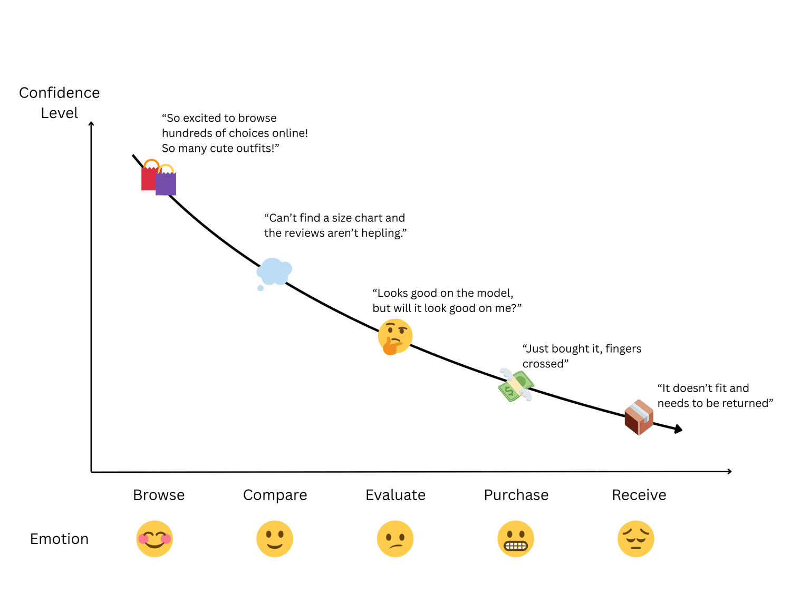
While existing technologies like AI-driven virtual try-ons and advanced sizing tools allow users to visualize fit and input body measurements, they largely address the technical side of online shopping. What’s missing is the human side — emotional reassurance, authentic representation, and feedback from real buyers with similar body types.
Method 1: Rapid Ethnography & Contextual Interview
To ground our understanding of these issues in real experiences, we conducted a rapid ethnography and contextual interview study with Cornell students who frequently shop online for clothes.
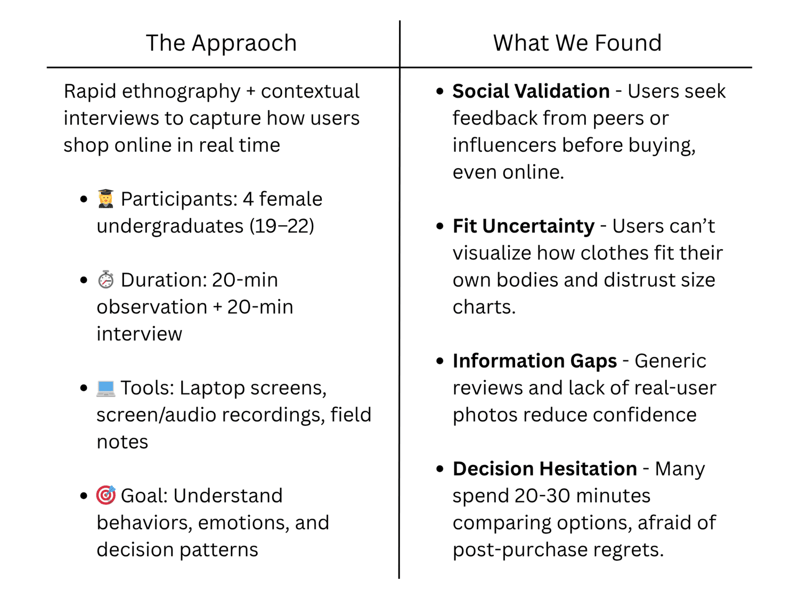
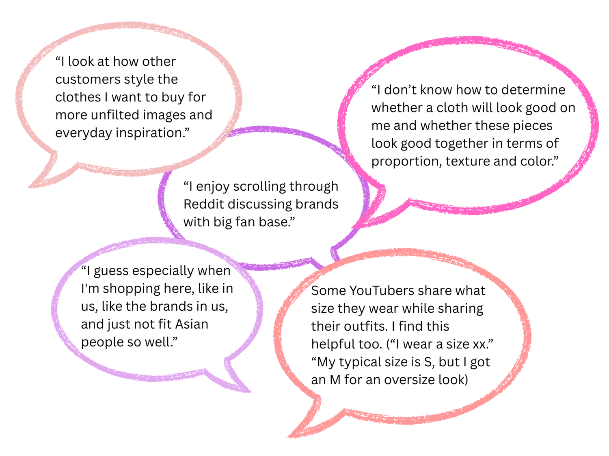
These insights revealed how online shopping confidence is shaped by both social validation and visual trust. Users rely heavily on others’ opinions, seek real-world images for reassurance, and struggle to imagine how clothes fit their own bodies.
Based on these findings, our team wrote down some self-reflection questions that potentially guide later design:
- If shopping websites lack review, how might we help users find feedback from people with similar body type to their own?
- How might we, through design, encourages authentic, supportive sharing rather than curated perfection?
- How might we restore the sense of social connection and reassurance that’s lost in online shopping?
While these early ideas captured possible directions, we realized that the deeper insights would come from users co-creating the ideal shopping experience themselves. In order to translate behavioral insights to tangible design directions through collaboration with actual users, we decided to organize a Co-Design Workshops.
Method 2: Co-Design Workshops
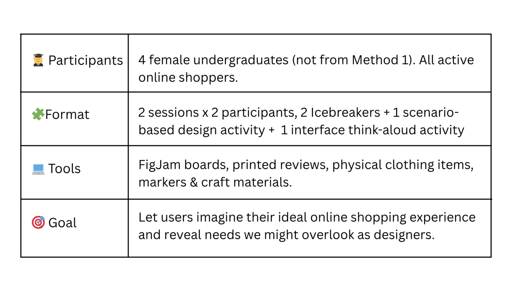
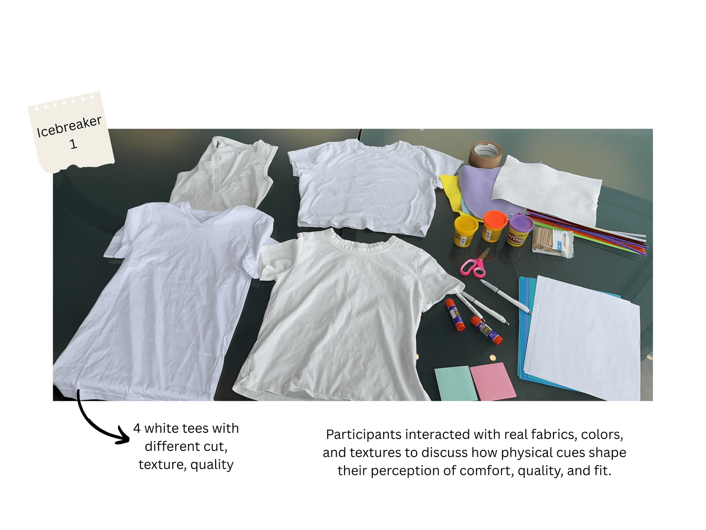
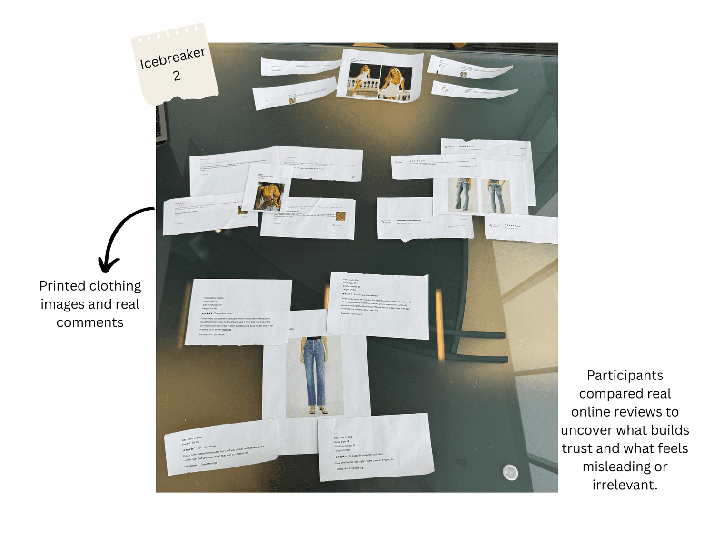
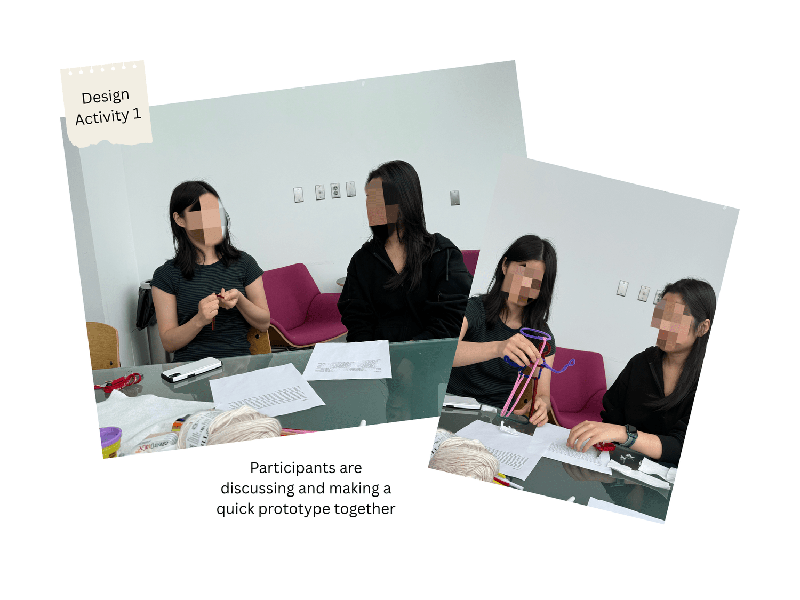
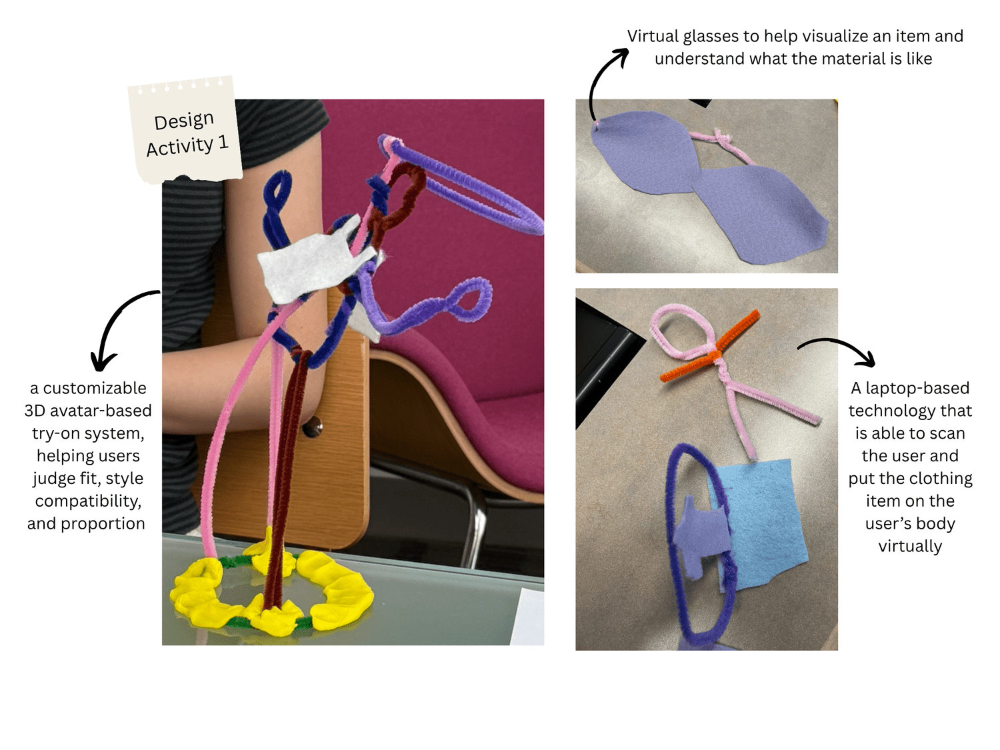
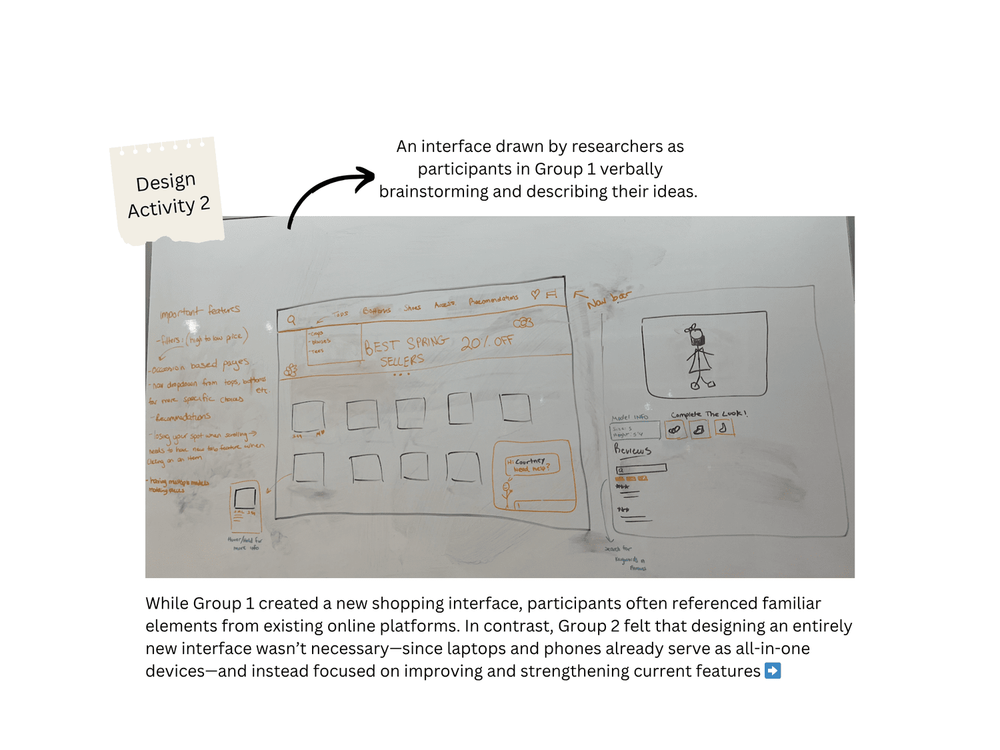
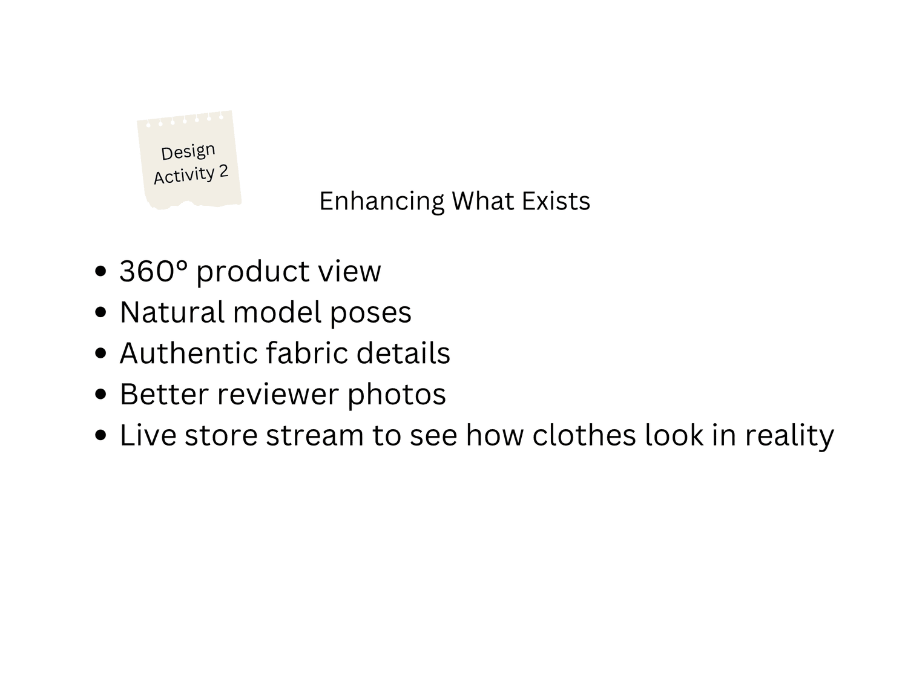
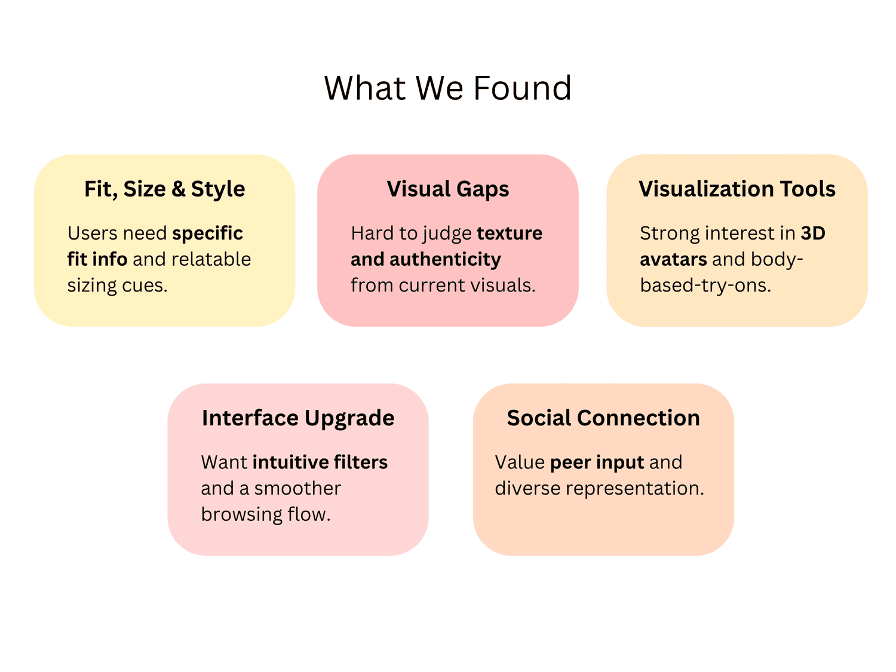
Design Concept
Building on insights gathered, we synthesized recurring user needs around fit accuracy, authenticity, and social reassurance. These findings directly informed the design of FitMatch—an app that combines personalized fit visualization with community-driven confidence to create a more inclusive, trustworthy online shopping experience.
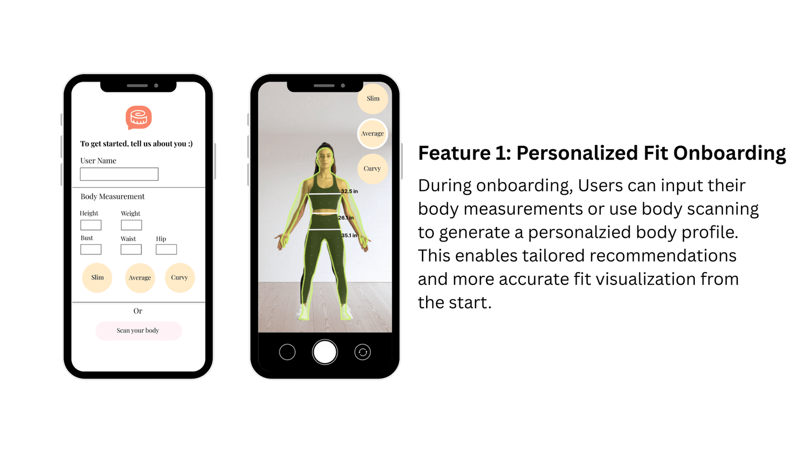
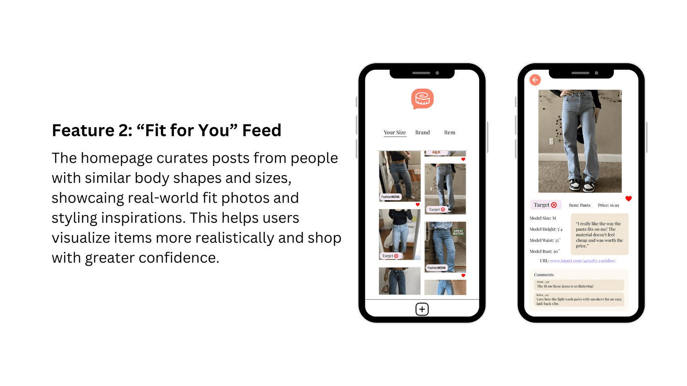
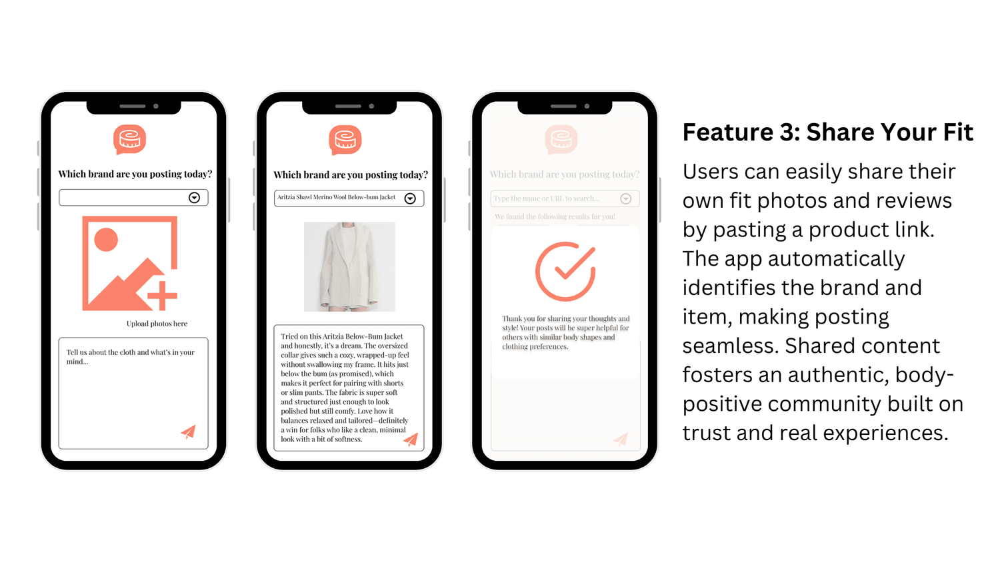
Reflection
FitMatch demonstrates how emotionally resonant and socially integrated design can transform the online shopping experience for young women. By combining personalized fit visualization with authentic community interaction, FitMatch effectively bridges the confidence gap identified in our research.
Enhancing Fit Confidence
FitMatch directly addresses the pervasive uncertainty around online clothing fit through its personalized onboarding and real-world “Fit for You” feed. Participants found that seeing outfits on users with similar body types “made it much easier to imagine how something would actually look on me,” reflecting increased trust in purchase decisions.
Building an Inclusive and Supportive Community
The interactive review and commenting features encouraged authentic conversation rather than comparison. As one co-designer shared, “I’d feel more confident posting if everyone looked different — it feels more real that way.” By allowing anonymized fit sharing, the platform normalizes diversity in body shapes and fosters a culture of encouragement rather than judgment.
Encouraging Body Positivity and Realism
Participants emphasized how real-user photos and natural poses counter the idealized imagery common in retail media. FitMatch reframes shopping as an affirming experience — one that values comfort and self-expression over perfection. This shift cultivates sustainable confidence and emotional well-being tied to self-image, not social metrics.
Sustainable Engagement through Contribution
The review-posting system and reward mechanism promote continuous participation and community growth. Users are motivated to “share honest fit experiences because it helps someone else who looks like me.” This reciprocal sharing loop strengthens both brand trust and long-term user loyalty.
Takeaways
Compared to an intro-level HCI course, this course is more self-paced, which gave us more freedom regarding the timeline. As the project lead, I gained experience in managing the project timeline, delegating tasks, and selecting appropriate user study methods. This experience strengthened my self-discipline, communication, and project management skills, helping me develop a more holistic understanding of the design process.
Throughout the project, I focused on exploring diverse qualitative research methods to better understand user perceptions and behaviors. If given more time, I would further refine our Figma prototype to better reflect user insights.
Ultimately, this project reminded me that design goes beyond creating wireframes—it is a medium for expressing values. FitMatch embodies the message that young women should embrace their body image rather than conform to conventional beauty standards, a value I deeply resonate with both personally and as a designer.